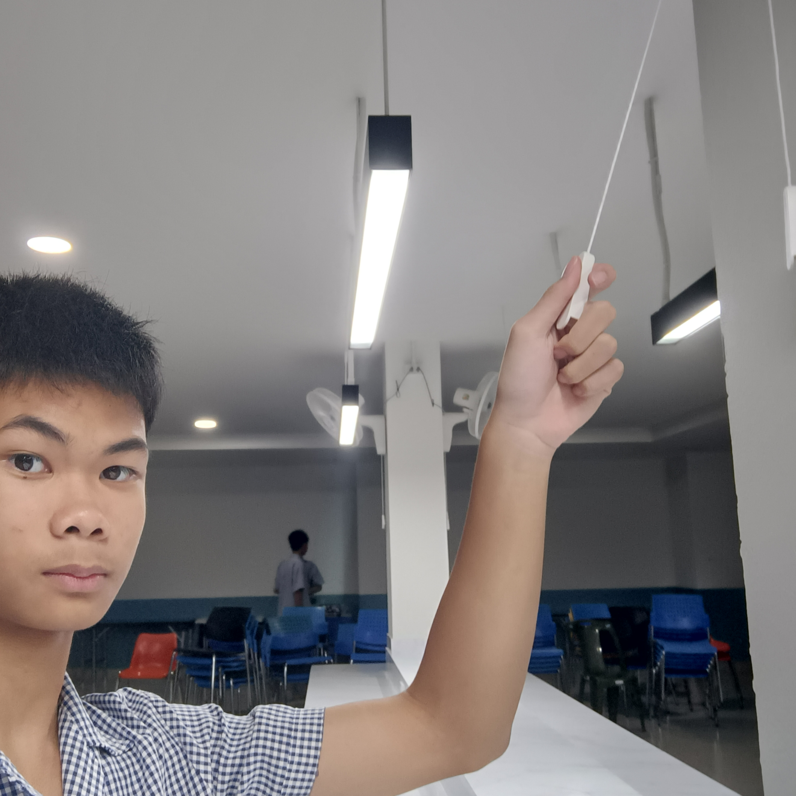
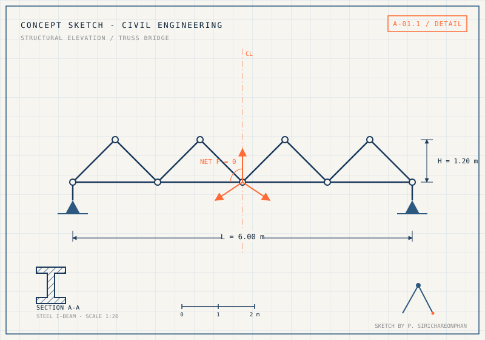
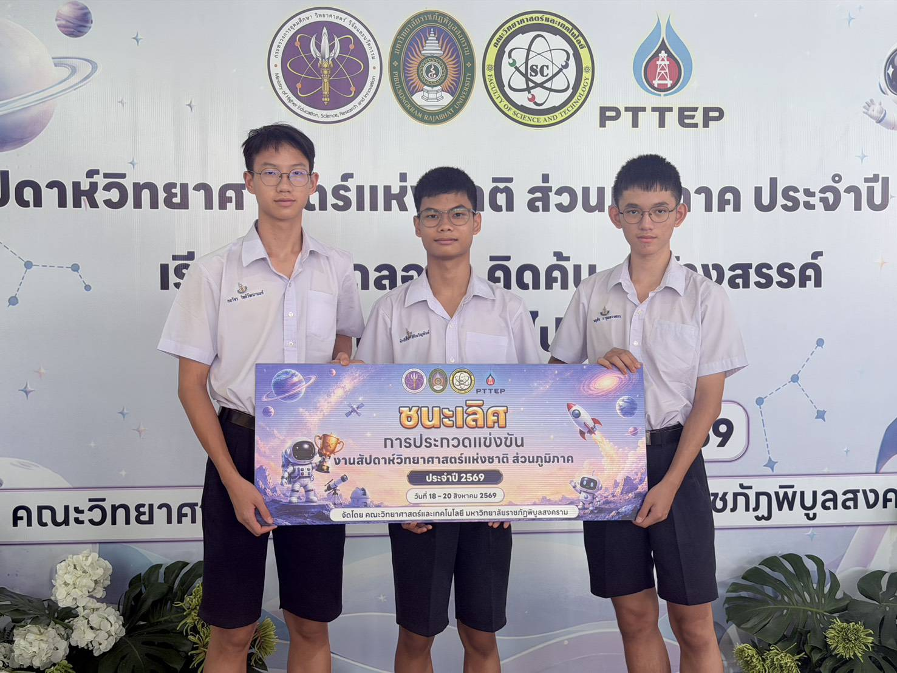
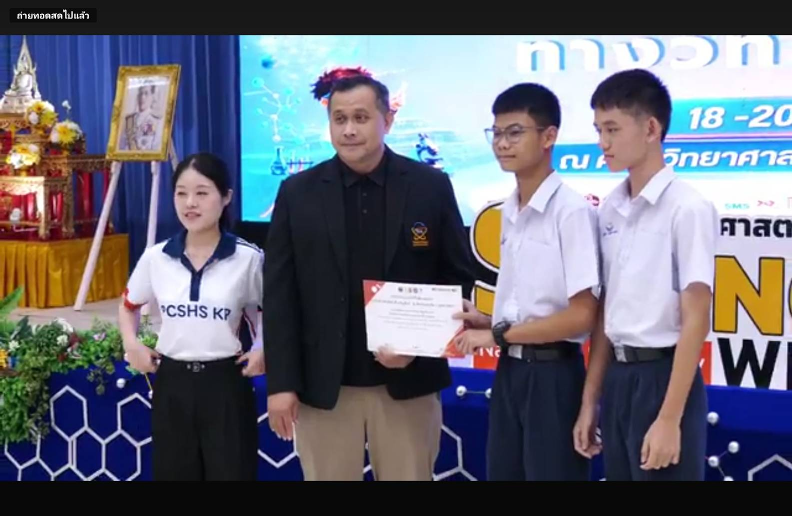
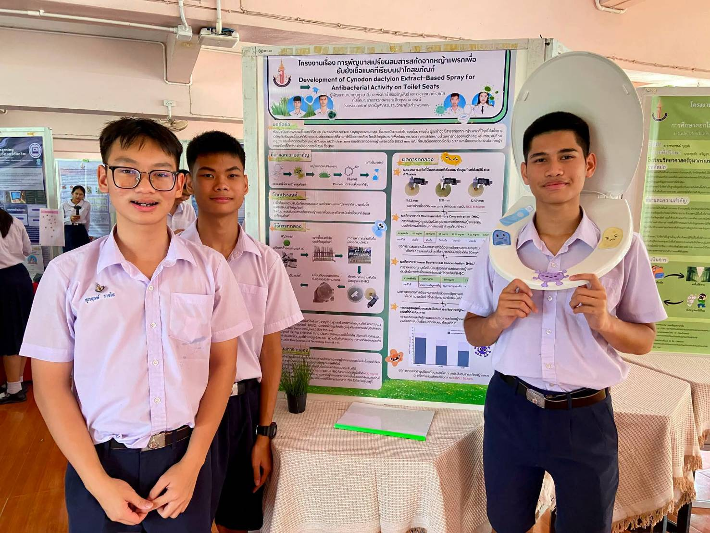
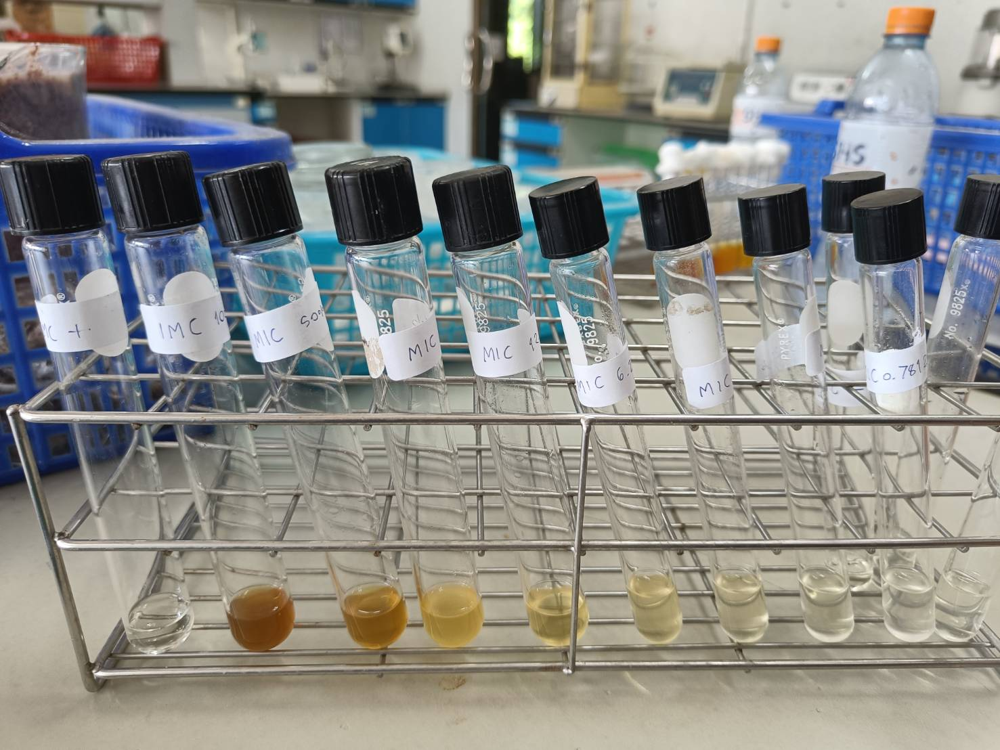
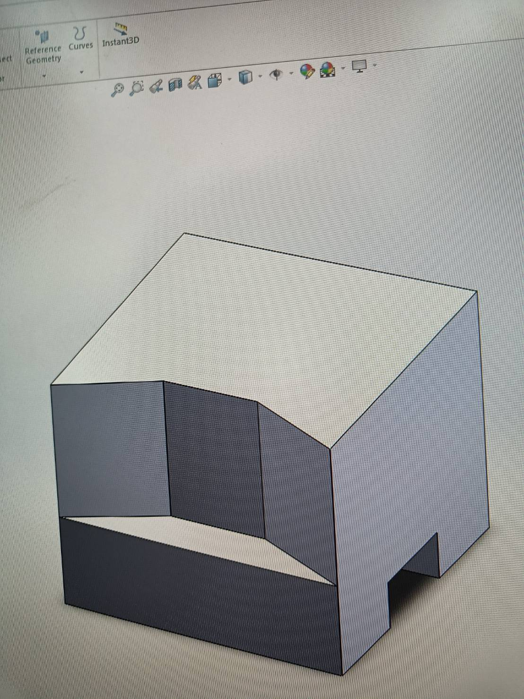
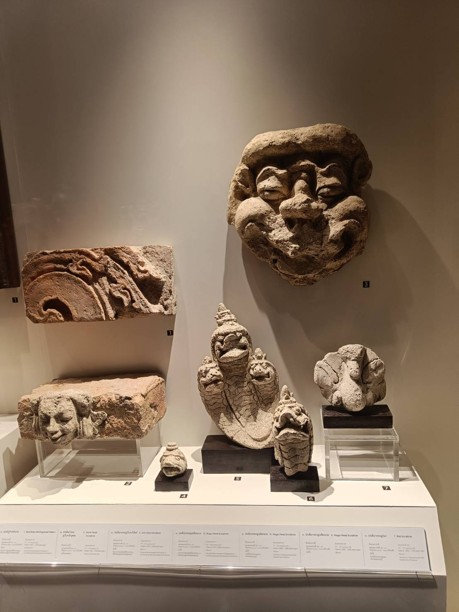
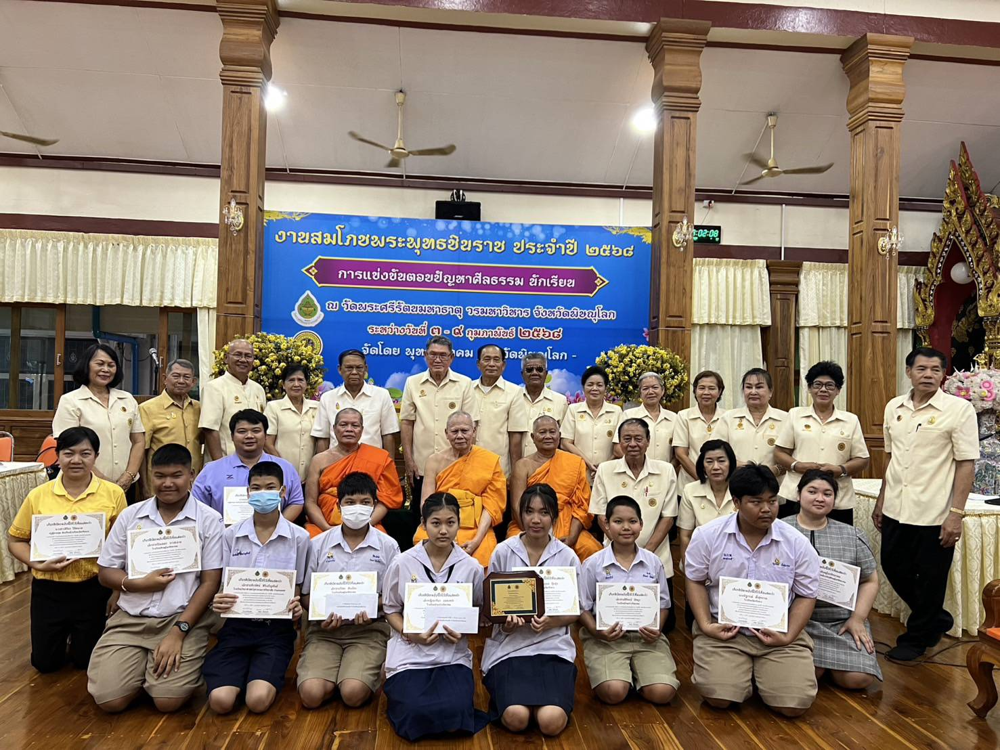
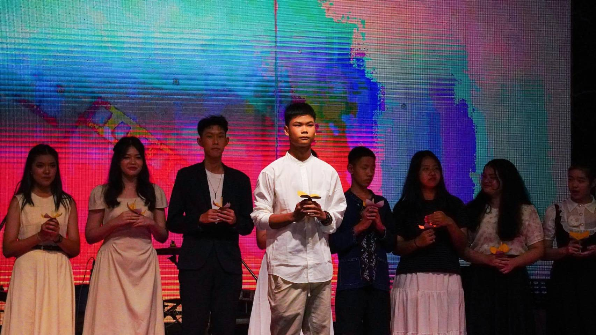

BUILDING THE FUTURE — ว่าที่นักเรียนเตรียมวิศวกรรมโยธา
นักเรียนชั้นมัธยมศึกษาปีที่ 3 ผู้หลงใหลในโครงสร้าง สะพาน และการออกแบบเมือง มุ่งมั่นสมัครเข้าศึกษาต่อแผนการเรียนเตรียมวิศวกรรมศาสตร์ ระดับชั้น ม.4


ผมชื่อ เด็กชายพีรทัศน์ ศิริเจริญพันธ์ ปัจจุบันศึกษาอยู่ชั้นมัธยมศึกษาปีที่ 3 มีความสนใจในวิชาคณิตศาสตร์และฟิสิกส์เป็นพิเศษ โดยเฉพาะเรื่องแรงและโครงสร้าง ซึ่งเป็นแรงบันดาลใจให้อยากศึกษาต่อด้านวิศวกรรมโยธาในอนาคต
จุดเริ่มต้นความสนใจมาจาก [เล่าที่มาแรงบันดาลใจ เช่น การเข้าค่าย STEM หรือการเห็นโครงการก่อสร้างใกล้บ้าน] ทำให้อยากเรียนรู้การออกแบบและสร้างสรรค์ สิ่งปลูกสร้างที่มั่นคงปลอดภัยและเป็นประโยชน์ต่อสังคม เป้าหมายในอนาคตคือการเข้าศึกษาต่อ แผนการเรียนเตรียมวิศวกรรมศาสตร์ ระดับชั้น ม.4 เพื่อปูพื้นฐานสู่วิศวกรรมโยธาต่อไป
เริ่มสนใจวิชาคณิตศาสตร์และการก่อสร้าง จากการสังเกตโครงการก่อสร้างรอบตัว
ได้ลงมือทำโครงงานโครงสร้างเบื้องต้น จุดประกายความชอบด้านวิศวกรรม
ทำโครงงาน 10 ชิ้น ฝึก AutoCAD/SketchUp เบื้องต้น และเตรียมสมัครเรียนต่อ
ปูพื้นฐานสู่คณะวิศวกรรมศาสตร์ สาขาวิศวกรรมโยธา ในระดับอุดมศึกษาต่อไป







